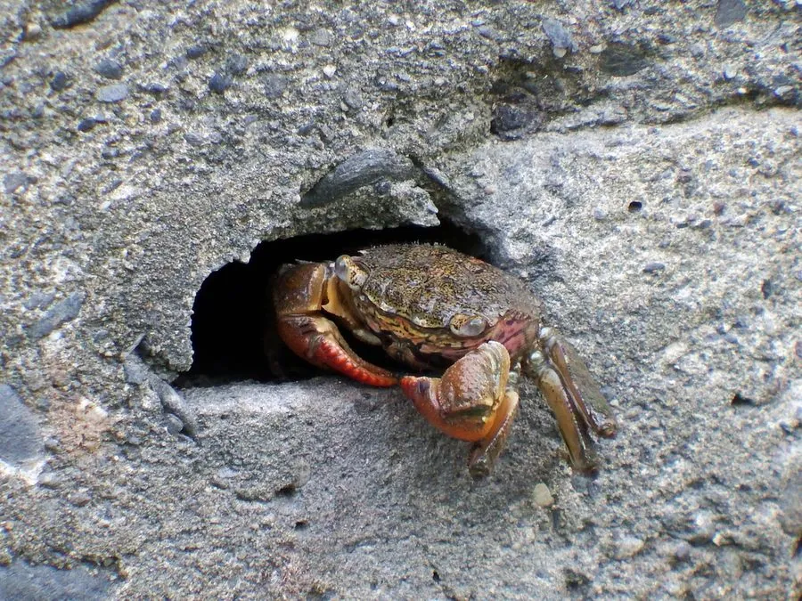

甲壳动物 · 动物界
双齿近相手蟹 Perisesarma bidens

生活在红树林和河口泥滩的小型蟹类，螯足掌部有两条齿状突起，体色深褐带红，退潮时在泥滩上觅食。
- 分类
- 门节肢动物门纲软甲纲目十足目科相手蟹科属近相手蟹属
- 栖息环境
- 红树林、河口和潮间带泥滩，多在自己挖掘的洞穴中
- 地理分布
- 中国南方、东南亚和南亚的红树林与河口
- 保护级别
- IUCN 暂无评估；中国未列入国家重点保护名录
物种志
双齿近相手蟹头胸甲宽 2–3 cm，近方形，体色深褐、暗红或紫黑，螯足掌部有两条明显的齿状突起，因此得名；步足较长，末端尖锐，适合在泥滩和红树根间攀爬。
它分布于中国南方、东南亚和南亚的红树林、河口和潮间带泥滩，退潮时出来活动，取食藻类、腐殖质、落叶和小型无脊椎动物。双齿近相手蟹是红树林生态系统中的常见蟹类，洞穴和取食活动能促进泥沙翻动和有机物分解，为其他生物创造微生境。它遇到危险时迅速钻进洞穴，洞口常堆着挖出的泥球；它对盐度和潮位变化有较强的适应能力，雌蟹繁殖期把卵抱在腹下，幼体在海水中发育。目前 IUCN 暂无评估；中国未列入国家重点保护名录。
形态与习性
- 食性藻类、腐殖质、落叶和小型无脊椎动物
- 体型头胸甲宽 2–3 cm
- 识别螯足掌部有两条齿状突起
- 习性退潮时活动，遇险迅速钻洞
- 生态作用翻动泥沙、促进有机物分解
- 繁殖雌蟹抱卵，幼体在海水中发育
趣味知识
- 双齿近相手蟹的螯足上有两条齿状突起，名字由此而来。
- 它在泥滩上挖洞，洞口常常堆着一圈挖出来的小泥球。
- 红树林里的相手蟹能翻动泥沙，帮助有机物分解。